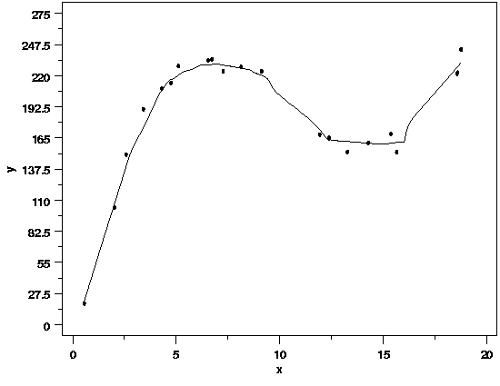

Example of LOESS Computations |
|
| Example Illustrates Concepts | This example, based on simulated data, is designed to illustrate ome of the concepts behind LOESS by stepping through the computations in detail. It is not meant to be a guide for implementation of LOESS software. The data are listed below, followed by a plot showing the data with a LOESS regression function. A smoothing parameter of q=0.33 was chosen for this problem and the local model is a straight line. Those choices for the inputs to LOESS clearly produce a function that captures the deterministic structure in the data fairly well. More information on how to choose appropriate values of the smoothing parameter and the degree of the local polynomial can be found in Section 4.4.2.3. |
| Simulated Data |
x y x y x y
1 0.5578196 18.63654 8 6.5411662 233.55387 15 13.2728619 152.61107
2 2.0217271 103.49646 9 6.7216176 234.55054 16 14.2767453 160.78742
3 2.5773252 150.35391 10 7.2600583 223.89225 17 15.3731026 168.55567
4 3.4140288 190.51031 11 8.1335874 227.68339 18 15.6476637 152.42658
5 4.3014084 208.70115 12 9.1224379 223.91982 19 18.5605355 221.70702
6 4.7448394 213.71135 13 11.9296663 168.01999 20 18.5866354 222.69040
7 5.1073781 228.49353 14 12.3797674 164.95750 21 18.7572812 243.18828
|
| Data with LOESS Regression Function |  |
| Computational Details |
The computational details of the LOESS fit are shown in the table below.
The first column lists each point of estimation. Using these points, the
appropriate subsets of the data for the local fits are identified and the
weights are computed. Computing the weights is a three-step process:
|
|
Final Note on LOESS Computations |
The table only shows the computation for data points in the original data set, but the same steps can be used to compute predicted values for levels of the predictor variable(s) that are not observed in the data. For example, the LOESS regression function for a value of x=10 is f(x)=202.9876. When making a plot like the one shown above, it is a good idea to use a fairly dense set of predictor variable values so that the shape of the regression function can be seen clearly. Just connecting the dots using the values of the regression function computed at the data points may hide some of the structure of the regression function if there are any gaps in the predictor variable values. |
|
Point of Estimation |
Local Subset of Data |
Local Parameter Estimates |
Regression Function Value |
|---|---|---|---|
0.5578196 |
Scaled
x y Distance Distance Weight
0.5578196 18.63654 0.000000 0.0000000 1.00000000
2.0217271 103.49646 1.463907 0.3217691 0.90334913
2.5773252 150.35391 2.019506 0.4438904 0.75988974
3.4140288 190.51031 2.856209 0.6277992 0.42621714
4.3014084 208.70115 3.743589 0.8228466 0.08686171
4.7448394 213.71135 4.187020 0.9203134 0.01072308
5.1073781 228.49353 4.549558 1.0000000 0.00000000
|
Intercept: -12.33679 Slope: 59.03309 |
20.59302 |
2.0217271 |
Scaled
x y Distance Distance Weight
0.5578196 18.63654 1.4639075 0.4744242 0.71264221
2.0217271 103.49646 0.0000000 0.0000000 1.00000000
2.5773252 150.35391 0.5555981 0.1800586 0.98258894
3.4140288 190.51031 1.3923017 0.4512181 0.74894225
4.3014084 208.70115 2.2796813 0.7388008 0.21250141
4.7448394 213.71135 2.7231123 0.8825082 0.03057161
5.1073781 228.49353 3.0856510 1.0000000 0.00000000
|
Intercept: -7.176132 Slope: 56.55384 |
107.1603 |
2.5773252 |
Scaled
x y Distance Distance Weight
0.5578196 18.63654 2.0195055 0.7982068 0.1186858
2.0217271 103.49646 0.5555981 0.2195994 0.9685654
2.5773252 150.35391 0.0000000 0.0000000 1.0000000
3.4140288 190.51031 0.8367037 0.3307060 0.8953727
4.3014084 208.70115 1.7240833 0.6814416 0.3194020
4.7448394 213.71135 2.1675143 0.8567071 0.0511567
5.1073781 228.49353 2.5300530 1.0000000 0.0000000
|
Intercept: 8.179267 Slope: 51.05608 |
139.7674 |
3.4140288 |
Scaled
x y Distance Distance Weight
0.5578196 18.63654 2.8562092 1.0000000 0.0000000
2.0217271 103.49646 1.3923017 0.4874649 0.6912001
2.5773252 150.35391 0.8367037 0.2929420 0.9264635
3.4140288 190.51031 0.0000000 0.0000000 1.0000000
4.3014084 208.70115 0.8873796 0.3106844 0.9127048
4.7448394 213.71135 1.3308106 0.4659360 0.7262018
5.1073781 228.49353 1.6933493 0.5928660 0.4960661
|
Intercept: 49.31585 Slope: 36.59817 |
174.263 |
4.301408 |
Scaled
x y Distance Distance Weight
2.021727 103.4965 2.2796813 1.0000000 0.0000000000
2.577325 150.3539 1.7240833 0.7562826 0.1827032575
3.414029 190.5103 0.8873796 0.3892560 0.8332903500
4.301408 208.7011 0.0000000 0.0000000 1.0000000000
4.744839 213.7114 0.4434310 0.1945145 0.9780832154
5.107378 228.4935 0.8059697 0.3535449 0.8731992647
6.541166 233.5539 2.2397578 0.9824872 0.0001375768
|
Intercept: 101.7274 Slope: 24.52825 |
207.2334 |
4.744839 |
Scaled
x y Distance Distance Weight
2.577325 150.3539 2.1675143 1.0000000 0.00000000
3.414029 190.5103 1.3308106 0.6139801 0.45395338
4.301408 208.7011 0.4434310 0.2045804 0.97453230
4.744839 213.7114 0.0000000 0.0000000 1.00000000
5.107378 228.4935 0.3625387 0.1672601 0.98602780
6.541166 233.5539 1.7963268 0.8287497 0.07994777
6.721618 234.5505 1.9767781 0.9120024 0.01407495
|
Intercept: 129.589 Slope: 18.35102 |
216.6616 |
5.107378 |
Scaled
x y Distance Distance Weight
3.414029 190.5103 1.6933493 0.7866237 0.1352074
4.301408 208.7011 0.8059697 0.3744029 0.8506702
4.744839 213.7114 0.3625387 0.1684127 0.9857384
5.107378 228.4935 0.0000000 0.0000000 1.0000000
6.541166 233.5539 1.4337881 0.6660479 0.3496993
6.721618 234.5505 1.6142394 0.7498743 0.1934386
7.260058 223.8922 2.1526801 1.0000000 0.0000000
|
Intercept: 157.4268 Slope: 12.35814 |
220.5445 |
6.541166 |
Scaled
x y Distance Distance Weight
4.301408 208.7011 2.2397578 1.00000000 0.0000000
4.744839 213.7114 1.7963268 0.80201832 0.1134608
5.107378 228.4935 1.4337881 0.64015318 0.4014046
6.541166 233.5539 0.0000000 0.00000000 1.0000000
6.721618 234.5505 0.1804514 0.08056736 0.9984319
7.260058 223.8922 0.7188921 0.32096867 0.9040446
8.133587 227.6834 1.5924212 0.71097920 0.2628895
|
Intercept: 229.4922 Slope: 0.05632731 |
229.8607 |
6.721618 |
Scaled
x y Distance Distance Weight
4.744839 213.7114 1.9767781 0.82337613 0.08622997
5.107378 228.4935 1.6142394 0.67236996 0.33720306
6.541166 233.5539 0.1804514 0.07516238 0.99872668
6.721618 234.5505 0.0000000 0.00000000 1.00000000
7.260058 223.8922 0.5384407 0.22427364 0.96653833
8.133587 227.6834 1.4119698 0.58811975 0.50545839
9.122438 223.9198 2.4008203 1.00000000 0.00000000
|
Intercept: 234.6581 Slope: -0.7175902 |
229.8347 |
7.260058 |
Scaled
x y Distance Distance Weight
4.744839 213.7114 2.5152188 1.0000000 0.00000000
5.107378 228.4935 2.1526801 0.8558620 0.05192908
6.541166 233.5539 0.7188921 0.2858169 0.93157650
6.721618 234.5505 0.5384407 0.2140731 0.97085661
7.260058 223.8922 0.0000000 0.0000000 1.00000000
8.133587 227.6834 0.8735291 0.3472975 0.87952227
9.122438 223.9198 1.8623796 0.7404444 0.20963282
|
Intercept: 256.1122 Slope: -3.675186 |
229.4301 |
8.133587 |
Scaled
x y Distance Distance Weight
4.744839 213.7114 3.3887480 1.0000000 0.00000000
5.107378 228.4935 3.0262093 0.8930169 0.02384748
6.541166 233.5539 1.5924212 0.4699143 0.71988630
6.721618 234.5505 1.4119698 0.4166642 0.79830929
7.260058 223.8922 0.8735291 0.2577734 0.94949020
8.133587 227.6834 0.0000000 0.0000000 1.00000000
9.122438 223.9198 0.9888505 0.2918041 0.92729576
|
Intercept: 253.2781 Slope: -3.279439 |
226.6045 |
9.122438 |
Scaled
x y Distance Distance Weight
6.541166 233.5539 2.5812717 0.7924503 0.12677771
6.721618 234.5505 2.4008203 0.7370517 0.21556849
7.260058 223.8922 1.8623796 0.5717504 0.53755739
8.133587 227.6834 0.9888505 0.3035770 0.91839421
9.122438 223.9198 0.0000000 0.0000000 1.00000000
11.929666 168.0200 2.8072284 0.8618190 0.04661694
12.379767 164.9575 3.2573296 1.0000000 0.00000000
|
Intercept: 270.4315 Slope: -5.485499 |
220.3904 |
11.929666 |
Scaled
x y Distance Distance Weight
9.122438 223.9198 2.8072284 0.7550378 0.184770815
11.929666 168.0200 0.0000000 0.0000000 1.000000000
12.379767 164.9575 0.4501011 0.1210601 0.994686831
13.272862 152.6111 1.3431956 0.3612686 0.865111929
14.276745 160.7874 2.3470790 0.6312750 0.419234064
15.373103 168.5557 3.4434363 0.9261535 0.008688746
15.647664 152.4266 3.7179973 1.0000000 0.000000000
|
Intercept: 308.9601 Slope: -11.45146 |
172.348 |
12.379767 |
Scaled
x y Distance Distance Weight
9.122438 223.9198 3.2573296 0.9967665 9.039729e-07
11.929666 168.0200 0.4501011 0.1377342 9.921817e-01
12.379767 164.9575 0.0000000 0.0000000 1.000000e+00
13.272862 152.6111 0.8930945 0.2732934 9.400052e-01
14.276745 160.7874 1.8969778 0.5804890 5.204831e-01
15.373103 168.5557 2.9933351 0.9159823 1.240166e-02
15.647664 152.4266 3.2678962 1.0000000 0.000000e+00
|
Intercept: 223.4652 Slope: -4.816212 |
163.8417 |
13.272862 |
Scaled
x y Distance Distance Weight
9.122438 223.9198 4.1504240 1.0000000 0.0000000
11.929666 168.0200 1.3431956 0.3236285 0.9017216
12.379767 164.9575 0.8930945 0.2151815 0.9704061
13.272862 152.6111 0.0000000 0.0000000 1.0000000
14.276745 160.7874 1.0038834 0.2418749 0.9581463
15.373103 168.5557 2.1002407 0.5060304 0.6594627
15.647664 152.4266 2.3748017 0.5721829 0.5367160
|
Intercept: 181.6965 Slope: -1.495346 |
161.849 |
14.27675 |
Scaled
x y Distance Distance Weight
11.92967 168.0200 2.347079 0.5478977 0.5832828
12.37977 164.9575 1.896978 0.4428270 0.7614575
13.27286 152.6111 1.003883 0.2343447 0.9618859
14.27675 160.7874 0.000000 0.0000000 1.0000000
15.37310 168.5557 1.096357 0.2559316 0.9505470
15.64766 152.4266 1.370918 0.3200246 0.9048608
18.56054 221.7070 4.283790 1.0000000 0.0000000
|
Intercept: 176.3906 Slope: -1.124595 |
160.3351 |
15.37310 |
Scaled
x y Distance Distance Weight
12.37977 164.9575 2.9933351 0.93147799 7.056008e-03
13.27286 152.6111 2.1002407 0.65356129 3.745501e-01
14.27675 160.7874 1.0963573 0.34116885 8.855360e-01
15.37310 168.5557 0.0000000 0.00000000 1.000000e+00
15.64766 152.4266 0.2745611 0.08543902 9.981301e-01
18.56054 221.7070 3.1874329 0.99187812 1.411681e-05
18.58664 222.6904 3.2135328 1.00000000 0.000000e+00
|
Intercept: 143.1807 Slope: 1.106565 |
160.192 |
15.64766 |
Scaled
x y Distance Distance Weight
13.27286 152.6111 2.3748017 0.76369576 0.170574175
14.27675 160.7874 1.3709184 0.44086398 0.764337183
15.37310 168.5557 0.2745611 0.08829416 0.997936434
15.64766 152.4266 0.0000000 0.00000000 1.000000000
18.56054 221.7070 2.9128718 0.93672993 0.005644904
18.58664 222.6904 2.9389718 0.94512322 0.003779010
18.75728 243.1883 3.1096176 1.00000000 0.000000000
|
Intercept: 140.6646 Slope: 1.303136 |
161.0556 |
18.56054 |
Scaled
x y Distance Distance Weight
13.27286 152.6111 5.28767359 1.000000000 0.0000000
14.27675 160.7874 4.28379023 0.810146496 0.1026811
15.37310 168.5557 3.18743293 0.602804404 0.4763010
15.64766 152.4266 2.91287185 0.550879663 0.5776462
18.56054 221.7070 0.00000000 0.000000000 1.0000000
18.58664 222.6904 0.02609991 0.004935992 0.9999996
18.75728 243.1883 0.19674572 0.037208371 0.9998455
|
Intercept: -166.603 Slope: 21.22476 |
227.34 |
18.58664 |
Scaled
x y Distance Distance Weight
13.27286 152.6111 5.31377351 1.000000000 0.0000000
14.27675 160.7874 4.30989015 0.811079008 0.1014766
15.37310 168.5557 3.21353285 0.604755329 0.4724078
15.64766 152.4266 2.93897176 0.553085629 0.5734607
18.56054 221.7070 0.02609991 0.004911748 0.9999996
18.58664 222.6904 0.00000000 0.000000000 1.0000000
18.75728 243.1883 0.17064581 0.032113865 0.9999006
|
Intercept: -166.745 Slope: 21.23265 |
227.8985 |
18.75728 |
Scaled
x y Distance Distance Weight
13.27286 152.6111 5.4844193 1.00000000 0.00000000
14.27675 160.7874 4.4805360 0.81695722 0.09403942
15.37310 168.5557 3.3841787 0.61705323 0.44779210
15.64766 152.4266 3.1096176 0.56699121 0.54679001
18.56054 221.7070 0.1967457 0.03587357 0.99986151
18.58664 222.6904 0.1706458 0.03111465 0.99990963
18.75728 243.1883 0.0000000 0.00000000 1.00000000
|
Intercept: -167.6431 Slope: 21.28249 |
231.5586 |

{kind=link}